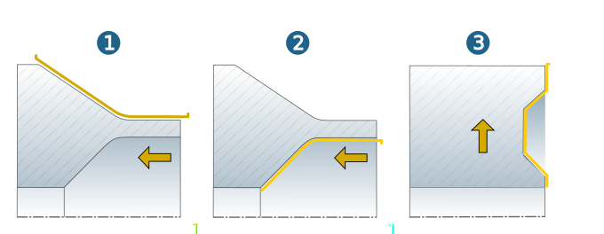
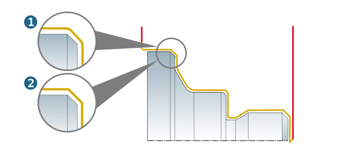

Strategy
Fine machining, in which the material left by the preceding roughing operations is removed.
 |
Cutting side
Inside (1)/ Outside (2): The external shape of a workpiece is created by using the Outside option, and the internal shape by using the Inside option.
Plane (3): Machining of the top face of the workpiece perpendicular to the axis of the turning surface.
|  |
Infeed direction
To left (1) / To right (2): Machining is performed from right to left or from left to right in the direction of the axis of the turning surface.
Outside-in (3) / Inside-out (4): Machining is performed perpendicularly to the axis of the turning surface (in the X direction) from the outside inwards or from the inside outwards.

Options
Falling contours allowed: Contours in the X direction are machined (1). Function disabled (2).
 |
Radial / axial limit: Limits the machining area of the tool used in the radial or axial direction.
Enable path compensation: When this option is activated, path compensation is handled by the controller, that is, the cutting radius is calculated by the controller (G41 and G42). If this option is not enabled, the cutting radius is calculated beforehand in hyperMILL.
Machining mode
Limit machining to selected areas.
Flat and steep areas are separated from each other by a slope angle. 0° corresponds to parallel to the turning axis and 90° is perpendicular to the turning axis.
Off: Steep and flat areas of the defined contour are machined (1).
Steep areas: Only the steep areas of the defined contour are machined (2).
Flat areas: Only the flat areas of the defined contour are machined (3).
 |
Smooth overlap
Note
Various tools and orientations are often required to manufacture complex components. The Smooth overlap function achieves smooth transitions without any visible machining marks between individual machining areas (jobs). The tool follows the selected contour beyond the boundary in a gentle lifting movement.
Please note: The selected contour must be part of the turning area.
Use smooth overlap: Activate to enable smooth lifting of the tool in the contour extension. Use Contour length to define the length of the lifting movement and Distance to define the maximum retract value of the tool for the extension of the selected contour.
|
Example: |
Subdivision into machining areas and overlap using the example of jobs 2 and 3, (1) - (5) = toolpaths of the jobs |
|
|
||

|
Example: |
(1) Selected contour, (2) Material to be removed, (3) Contour length, (4) Distance, (5) Extension of the selected contour, (6) Retract macro. |
 If the start or end of the selected contour is an interior corner with a radius equal to or smaller than the tool radius, automatic macro creation must take place. |
|
Edge behavior
The edge behavior of the tool can be controlled.
Select the Roll (standard) option if you want edge rolling. This produces rounded corners (1). Select the Extend option if you want the tool to move around the edges with tangential extension. This produces corners with sharp edges (2).
|  |